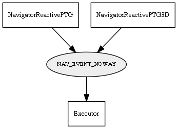

Global overview
All modules
All variables
All commands
Mission files
Pipelines
Variable: NAV_EVENT_NOWAY
Variable info:
Variable name
Short description
Who publishes it?
Who subscribes to it?
NAV_EVENT_NOWAY
An event from the navigator.
NavigatorReactivePTG
NavigatorReactivePTG3D
Executor
Variable graph:

Detailed description:
An event from the navigator.
Page generated by
Mooxygen 1.1.0
at Thu Jan 22 11:30:21 2015